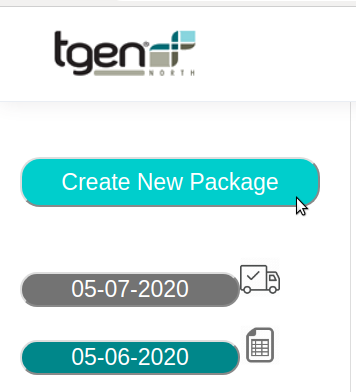
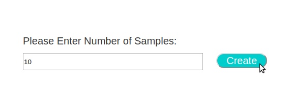
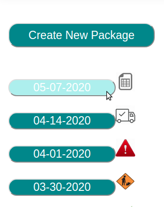

Samples are organized by the packages they are sent via to TGen North. When users wish to send a new batch of samples to TGen North they should create a new package.
In order to create a new package, users can click the "Create New Package" button located at the top of the collaborator portal sidebar
After clicking the "Create New Package" button, users are redirected to the new package page. Users then can input the amount of samples they would like to include in the package, and hit the "Create" button. If users aren't sure how many sample they would like to add, they can always start small and add more samples to the package durring the data entry stage. However samples, as of now, cannot be removed from a package.
After hitting create, users can see their new package populate on the top of the package list in the sidebar.